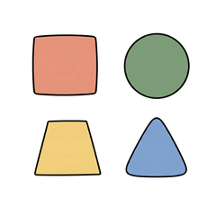

Effective date: November 14, 2026
Stories with DJJ operates this website and the Stories with DJJ YouTube channel. Contact: contact@storieswithdjj.com.
This website collects no personal information from visitors. It has no analytics, no tracking cookies, no embedded third-party content, and no forms.
A private internal tool used to run this channel, "storieswithdjj-gcloud," uses the YouTube Data API only to upload and schedule this channel's own videos, captions, and metadata, on the channel owner's own YouTube account. It does not access any other person's data.
Any Google account tokens this tool uses are stored only on the owner's own computer. They are never shared or sold, and are not used for advertising.
The owner can revoke this tool's access at any time at myaccount.google.com/permissions.
← Back to storieswithdjj.com